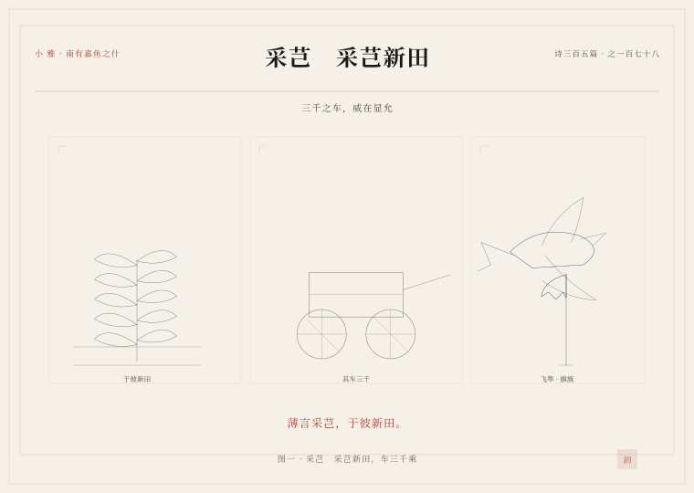
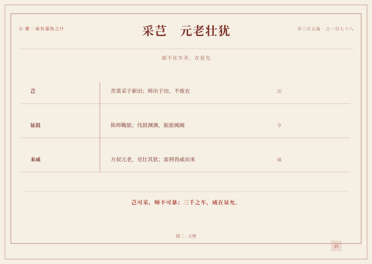

小雅 · 南有嘉鱼之什 SJ178
诗三判：
《毛序》：「《采芑》，宣王南征也。」
朱子《诗集传》：「兴也。芑，苦菜也。新田，新耕之田。菑亩，一岁之田。莅，临也。师，众。干，盾。试，肄也。骐，青黑马。翼翼，壮健貌。路车，大车。奭，赤貌。簟茀，竹簟以为车蔽。鱼服，鱼皮为矢服。钩膺，马胸之钩。鞗革，辔首也。」二章：「中乡，乡中也。约軧，束车毂也。错衡，饰衡也。八鸾，八铃。玱玱，声也。命服，天子所命之服。朱芾，朱蔽膝。葱珩，葱玉之珩。」三章：「鴥，疾飞。隼，鹞属。戾，至。集，止。钲，铙也。陈师鞠旅，列师告旅。渊渊，鼓声。阗阗，众声。」四章：「蠢，动。蛮荆，荆州之蛮。雠，仇。元老，老臣。犹，谋。啴啴，众盛。焞焞，盛。霆雷，疾雷。威，畏。」
本库的看法：《采芑》不是一首夸兵车的诗，是一首「以采菜起军兴」的诗。 芑是苦菜，采于新田菑亩；军行而采菜，见「师出于田」。车三千、四骐、路车、命服，是军容；飞隼、钲鼓、陈师，是军令；末章「显允方叔」两次，是诗骨。威不在车多，在「显允」。 须辨：芑是苦菜，不是芑谷；新田是新耕田，不是新田县；菑亩是一岁田，不是菑灾；师干是众与盾，不是师干之人；约軧是束毂，不是约车。断语：芑可采，师不可暴；三千之车，威在显允。
先辨五事：「芑」是苦菜，不是芑谷；「新田」是新耕之田，不是地名；「菑亩」是一岁之田，不是菑灾；「师干」是师众与盾，不是师干之人；「约軧」是束车毂，不是约束。
第一章
薄言采芑，于彼新田，于此菑亩。方叔莅止，其车三千，师干之试。
方叔率止，乘其四骐，四骐翼翼。路车有奭，簟茀鱼服，钩膺鞗革。
第二章
薄言采芑，于彼新田，于此中乡。方叔莅止，其车三千，旗旐央央。
方叔率止，约軧错衡，八鸾玱玱。服其命服，朱芾斯皇，有玱葱珩。
第三章
鴥彼飞隼，其飞戾天，亦集爰止。方叔莅止，其车三千，师干之试。
方叔率止，钲人伐鼓，陈师鞠旅。显允方叔，伐鼓渊渊，振旅阗阗。
第四章
蠢尔蛮荆，大邦为雠。方叔元老，克壮其犹。方叔率止，执讯获丑。
戎车啴啴，啴啴焞焞，如霆如雷。显允方叔，征伐玁狁，蛮荆来威。
读法：四章皆「方叔莅止」「方叔率止」二叠，如军令两通。前二章写车服，三章写鼓旅，四章写威。 由容入令，由令入威。
一章：且采苦菜，在那新田，在这菑亩。方叔来临，其车三千，师众与盾习试。方叔率之，乘四匹青黑马，四骐壮健。大车赤色，竹席车蔽，鱼皮箭袋，马胸钩，辔首。
二章：且采苦菜，在那新田，在这中乡。方叔来临，其车三千，旗旐鲜明。方叔率之，束毂饰衡，八铃玱玱。服其命服，朱蔽膝煌煌，葱玉珩玱玱。
三章：疾飞的隼，飞至天，也集而止。方叔来临，其车三千，师众与盾习试。方叔率之，钲人伐鼓，列师告旅。明信方叔，伐鼓渊渊，振旅阗阗。
四章：蠢动的蛮荆，与大邦为仇。方叔元老，能壮其谋。方叔率之，执讯获众。戎车啴啴，啴啴焞焞，如霆如雷。明信方叔，征伐玁狁，蛮荆畏威而来。
六对：
| 正 | 误 |
|---|---|
| 芑（苦菜） | 芑（芑谷） |
| 新田（新耕田） | 新田（地名） |
| 师干（众与盾） | 师干（师干之人） |
| 约軧（束车毂） | 约軧（约束） |
| 显允（明信） | 显允（显允之人） |
| 来威（畏威而来） | 来威（来示威） |

